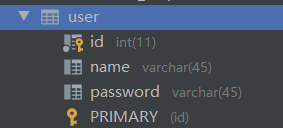

环境：
JDK1.8
Mysql:5.7
maven:3.6.3
回顾：
JDBC
mysql
java基础
maven
junit
框架：配置文件、最好的学习方式看官网https://mybatis.org/mybatis-3/zh/index.html
目录：
1、简介 1.1、什么是Mybatis、作用、为什么需要
MyBatis 是一款优秀的持久层框架
支持自定义 SQL、存储过程以及高级映射 。
MyBatis 免除了 几乎所有的 JDBC 代码 以及设置参数和获取结果集 的工作。
MyBatis 可以通过简单的 XML 或注解来配置和映射原始类型、接口和 Java POJO（Plain Old Java Objects，普通老式 Java 对象）为数据库中的记录。
MyBatis 本是apache的一个开源项目iBatis , 2010年这个项目由apache software foundation 迁移到了google code ，并且改名为MyBatis 。
2013年11月迁移到Github 。iBATIS一词来源于“internet”和“abatis”的组合，是一个基于Java的持久层框架。iBATIS提供的持久层框架包括SQL Maps和Data Access Objects（DAOs）
如何获取mybatis
1 2 3 4 5 6 <dependency > <groupId > org.mybatis</groupId > <artifactId > mybatis</artifactId > <version > 3.5.7</version > </dependency >
1.2、持久化 数据持久化：
将程序的数据在持久状态和瞬时状态转化的过程
内存：“断电即失 ”
如：数据库（jdbc）、IO文件持久化（浪费资源）、冷藏、罐头
为什么需要持久化？
因为内存断电即失
有一些对象，不能让他丢掉、如：钱
内存太贵了
1.3、持久层 以前用的：Dao层、Service层、Controller层
1.4、为什么需要Mybatis
传统的JDBC太复杂了
方便、简化
框架、自动化
帮助程序员将数据存入到数据库中
不用mybatis也可以，他只是个框架，用了更容易上手
特点：
sql与代码的分离
灵活，sql写在xml中，便于管理
提供映射标签，支持对象与数据库的orm字段关系映射
提供对象关系映射标签，支持对对象关系组建维护
提供xml标签，支持编写动态sql
最重要的一点：使用的人多！
2、第一个Mybatis程序 先理思路：搭建环境-导入mybatis-编写代码-测试
2.1、搭建环境 1、搭建数据库

2、新建项目
新建普通maven项目
删除src目录-父工程
3、导入依赖
1 2 3 4 5 6 7 8 9 10 11 12 13 14 15 16 17 18 19 <dependencies > <dependency > <groupId > org.mybatis</groupId > <artifactId > mybatis</artifactId > <version > 3.5.7</version > </dependency > <dependency > <groupId > mysql</groupId > <artifactId > mysql-connector-java</artifactId > <version > 5.1.49</version > </dependency > <dependency > <groupId > junit</groupId > <artifactId > junit</artifactId > <version > 4.12</version > </dependency > </dependencies >
2.2、创建模块Mybatis-01
1 2 3 4 5 6 7 8 9 10 11 12 13 14 15 16 17 18 <?xml version="1.0" encoding="UTF-8" ?> <!DOCTYPE configuration PUBLIC "-//mybatis.org//DTD Config 3.0//EN" "http://mybatis.org/dtd/mybatis-3-config.dtd" > <configuration > <environments default ="development" > <environment id ="development" > <transactionManager type ="JDBC" /> <dataSource type ="POOLED" > <property name ="driver" value ="${driver}" /> <property name ="url" value ="${url}" /> <property name ="username" value ="${username}" /> <property name ="password" value ="${password}" /> </dataSource > </environment > </environments > </configuration >
1 2 3 4 5 6 7 8 9 10 11 12 13 14 15 16 17 18 19 20 21 22 23 24 25 26 27 28 29 30 31 32 33 34 35 36 package com.kuang.utils; import org.apache.ibatis.io.Resources; import org.apache.ibatis.session.SqlSession; import org.apache.ibatis.session.SqlSessionFactory; import org.apache.ibatis.session.SqlSessionFactoryBuilder; import java.io.IOException; import java.io.InputStream; /** * sqlSessionFactory * @author 郭宇航 */ public class MybatisUtils { //提升作用域-局部变全局 private static SqlSessionFactory sqlSessionFactory; static { try { // 使用mybatis第一步 String resource = "mybatis-config.xml"; InputStream inputStream = null; inputStream = Resources.getResourceAsStream(resource); sqlSessionFactory = new SqlSessionFactoryBuilder().build(inputStream); } catch (IOException e) { e.printStackTrace(); } } public static SqlSession getSqlSession() { return sqlSessionFactory.openSession(); } }
2.3、编写代码
1 2 3 4 5 6 7 8 9 10 11 12 13 14 15 16 17 18 19 20 21 22 23 24 25 26 27 28 29 30 31 32 33 34 35 36 37 38 39 40 41 42 43 package com.kuang.pojo; /** * @author 郭宇航 */ public class User { private int id; private String name; private String password; public int getId() { return id; } public void setId(int id) { this.id = id; } public String getName() { return name; } public void setName(String name) { this.name = name; } public String getPassword() { return password; } public void setPassword(String password) { this.password = password; } @Override public String toString() { return "User{" + "id=" + id + ", name='" + name + '\'' + ", password='" + password + '\'' + '}'; } }
1 2 3 4 5 6 7 8 9 10 11 12 package com.kuang.dao; import com.kuang.pojo.User; import java.util.List; /** * @author 郭宇航 */ public interface UserDao { public List<User > getUserList(); }
1 2 3 4 5 6 7 8 9 10 11 12 <?xml version="1.0" encoding="UTF-8" ?> <!DOCTYPE mapper PUBLIC "-//mybatis.org//DTD Mapper 3.0//EN" "http://mybatis.org/dtd/mybatis-3-mapper.dtd" > <mapper namespace ="com.kuang.dao.UserDao" > <select id ="getUserList" resultType ="com.kuang.pojo.User" > select * from mybatis.user </select > </mapper >
2.4、测试 测试：
1 2 3 4 5 6 7 8 9 10 11 12 13 14 15 16 17 18 19 20 21 22 23 24 package com.kuang.dao; import com.kuang.pojo.User; import com.kuang.utils.MybatisUtils; import org.apache.ibatis.session.SqlSession; import org.junit.Test; import java.util.List; public class UserDaoTest { @Test public void test() { //第一步：获得sqlSession对象 SqlSession sqlSession = MybatisUtils.getSqlSession(); //第二步：面向接口编程,获取UserDao,执行SQL List<User > userList = sqlSession.getMapper(UserDao.class).getUserList(); for (User user : userList) { System.out.println(user.toString()); } //关闭sqlSession sqlSession.close(); } }
问题：
1.配置文件没有注册
2.绑定接口错误
3.方法名不对
4.返回类型不对
5.Maven导出Mapper.xml资源问题
1 2 3 4 5 6 7 8 9 10 11 12 <build > <resources > <resource > <directory > src/main</directory > <includes > <include > **/*.xml</include > <include > **/*.properties</include > </includes > <filtering > false</filtering > </resource > </resources > </build >
2.5、生命周期： SqlSessionFactoryBuilder：
这个类可以被实例化、使用和丢弃，一旦创建了 SqlSessionFactory，就不再需要它了 。 因此 SqlSessionFactoryBuilder 实例的最佳作用域是方法作用域（也就是局部方法变量）。 你可以重用 SqlSessionFactoryBuilder 来创建多个 SqlSessionFactory 实例，但最好还是不要一直保留着它，以保证所有的 XML 解析资源可以被释放给更重要的事情。
SqlSessionFactory：
SqlSessionFactory 一旦被创建就应该在应用的运行期间一直存在 ，没有任何理由丢弃它或重新创建另一个实例。 使用 SqlSessionFactory 的最佳实践是在应用运行期间不要重复创建多次，多次重建 SqlSessionFactory 被视为一种代码“坏习惯”。因此 SqlSessionFactory 的最佳作用域是应用作用域。 有很多方法可以做到，最简单的就是使用单例模式或者静态单例模式。
SqlSession：
每个线程都应该有它自己的 SqlSession 实例。SqlSession 的实例不是线程安全的，因此是不能被共享的 ，所以它的最佳的作用域是请求或方法作用域。 绝对不能将 SqlSession 实例的引用放在一个类的静态域，甚至一个类的实例变量也不行。 也绝不能将 SqlSession 实例的引用放在任何类型的托管作用域中，比如 Servlet 框架中的 HttpSession。 如果你现在正在使用一种 Web 框架，考虑将 SqlSession 放在一个和 HTTP 请求相似的作用域中。 换句话说，每次收到 HTTP 请求，就可以打开一个 SqlSession，返回一个响应后，就关闭它。 这个关闭操作很重要，为了确保每次都能执行关闭操作，你应该把这个关闭操作放到 finally 块中。 下面的示例就是一个确保 SqlSession 关闭的标准模式：
3、CRUD 所有的操作只和接口和配置文件有关，然后写测试。
步骤：
1、编写接口
2、编写对应的mapper中的sql语句
3、测试接口
3.1、namespace 中的包名要和DAO\MAPPER接口的路径相同。
3.2、select 查询语句
1 2 3 <select id ="getUserList" resultType ="com.kuang.pojo.User" > select * from mybatis.user </select >
id：就是对于namespace中配置接口中的方法名。
resultType：Sql语句执行后的返回值类型！Class、基本类型，集合Map以类为主。
parameterType：sql传入的参数类型。获取传入参数#{}、${}
1 2 3 <select id ="getUserById" resultType ="com.kuang.pojo.User" **parameterType **="int" > select * from mybatis.user where id = #{id} </select >
3.3、insert 注意：增删该需要提交事务!
1 2 3 4 5 6 7 8 9 10 11 12 13 14 15 16 17 18 19 20 21 22 23 24 25 26 27 28 29 30 31 32 33 /** * * @param user * @return */ public int addUser(User user); <insert id ="addUser" parameterType ="com.kuang.pojo.User" > insert into mybatis.user (id, name, password) values (#{id}, #{name}, #{password}) </insert > /** * 插入 */ @Test public void test3() { //第一步：获得sqlSession对象 SqlSession sqlSession = MybatisUtils.getSqlSession(); //第二步：面向接口编程,获取UserDao,执行SQL User user = new User(4,"root","1234"); int res = sqlSession.getMapper(UserMapper.class).addUser(user); if (res>0){ System.out.println("插入成功"); } //提交事务 sqlSession.commit(); //关闭sqlSession sqlSession.close(); }
3.4、update 1 2 3 4 5 6 7 8 9 10 11 12 13 14 15 16 17 18 19 20 21 22 23 24 25 26 27 28 29 30 /** * 修改User * @return */ public int updateUser(User user); <update id ="updateUser" parameterType ="com.kuang.pojo.User" > update mybatis.user set name = #{name},password = #{password} where id = #{id}; </update > /** * 修改 */ @Test public void test4() { //第一步：获得sqlSession对象 SqlSession sqlSession = MybatisUtils.getSqlSession(); //第二步：面向接口编程,获取UserDao,执行SQL User user = new User(4,"root","root"); int res = sqlSession.getMapper(UserMapper.class).updateUser(user); if (res>0){ System.out.println("修改成功"); } //提交事务 sqlSession.commit(); //关闭sqlSession sqlSession.close(); }
3.5、delete 1 2 3 4 5 6 7 8 9 10 11 12 13 14 15 16 17 18 19 20 21 22 23 24 25 26 27 28 29 /** * 删除User * @return */ public int deleteUser(int id); <delete id ="deleteUser" parameterType ="com.kuang.pojo.User" > delete from mybatis.user where id = #{id} </delete > /** * 删除 */ @Test public void test5() { //第一步：获得sqlSession对象 SqlSession sqlSession = MybatisUtils.getSqlSession(); //第二步：面向接口编程,获取UserDao,执行SQL int res = sqlSession.getMapper(UserMapper.class).deleteUser(4); if (res>0){ System.out.println("删除成功"); } //提交事务 sqlSession.commit(); //关闭sqlSession sqlSession.close(); }
3.6、总结 注意：增删该需要提交事务!
分析错误：
1 2 3 <select id ="addUser" parameterType ="com.kuang.pojo.User" > insert into mybatis.user (id, name, password) values (#{id}, #{name}, #{password}) </select >
配置mapper路径时要用”/“
sql错误
连接数据库url错误
乱码问题：mysql修改为utf8mb4
3.7、万能Map 假设我们的实体类，或者数据库中的表参数过多，应当考虑使用map，可以空很多字段。
1 2 3 4 5 6 7 8 9 10 11 /** * inset map,万能的map * 好处：不需要知道数据库有什么 * @return */ public int addUser2(Map<String,Object> map); <insert id ="addUser2" parameterType ="map" > insert into mybatis.user (id, name, password) values (#{userId},#{userName},#{userPaw}) </insert >
Map传递参数，直接在sql中取key即可！parameterType=”map”
只有基本类型时，直接在sql中取名即可！parameterType=”int”【可以不写】
多个参数用map，或者注解！
3.8、模糊查询 sql注入问题！sql用%%，这种安全！
1 List<User > userList = sqlSession.getMapper(UserMapper.class).getUserListLike("%roo%");
防止sql注入问题，在sql拼接中使用通配符”where name like “%” #{value} “%”“：
1 2 3 4 5 6 <select id ="getUserListLike" resultType ="com.kuang.pojo.User" > select * from user where name like "%" #{value} "%" </select > List<User > userList = sqlSession.getMapper(UserMapper.class).getUserListLike("roo");
4、配置解析 项目例子：mybatis-02
MyBatis 的配置文件包含了会深深影响 MyBatis 行为的设置和属性信息。
https://mybatis.org/mybatis-3/zh/configuration.html
4.1、核心配置文件 mybatis-config.xml
除了红框的，其他了解即可。
4.2、环境配置（environments） MyBatis 可以配置成适应多种环境，不过要记住：尽管可以配置多个环境，但每个 SqlSessionFactory 实例只能选择一种环境。
事务管理器默认JDBC；数据源默认为POOLED，有连接池的实现。
1 2 3 4 5 6 7 8 9 10 11 12 13 14 15 16 17 18 19 20 21 22 <environments default ="test" > <environment id ="development" > <transactionManager type ="JDBC" /> <dataSource type ="POOLED" > <property name ="driver" value ="com.mysql.jdbc.Driver" /> <property name ="url" value ="jdbc:mysql://39.106.63.189:3306/mybatis?useSSL=false& useUnicode=true& characterEncoding=UTF-8" /> <property name ="username" value ="root" /> <property name ="password" value ="root" /> </dataSource > </environment > <environment id ="test" > <transactionManager type ="JDBC" /> <dataSource type ="POOLED" > <property name ="driver" value ="com.mysql.jdbc.Driver" /> <property name ="url" value ="jdbc:mysql://39.106.63.189:3306/mybatis?useSSL=false& useUnicode=true& characterEncoding=UTF-8" /> <property name ="username" value ="root" /> <property name ="password" value ="root" /> </dataSource > </environment > </environments >
4.2.1 事务管理器（transactionManager）
默认JDBC
在 MyBatis 中有两种类型的事务管理器（也就是 type=”[JDBC|MANAGED]”）：
JDBC – 这个配置直接使用了 JDBC 的提交和回滚设施，它依赖从数据源获得的连接来管理事务作用域。
MANAGED – 这个配置几乎没做什么。它从不提交或回滚一个连接，而是让容器来管理事务的整个生命周期（比如 JEE 应用服务器的上下文）。 默认情况下它会关闭连接。然而一些容器并不希望连接被关闭，因此需要将 closeConnection 属性设置为 false 来阻止默认的关闭行为。例如:
`
<property name="closeConnection" value="false"/> `
提示 如果你正在使用 Spring + MyBatis，则没有必要配置事务管理器，因为 Spring 模块会使用自带的管理器来覆盖前面的配置。
4.2.2 数据源（dataSource）
默认为POOLED，有连接池的实现
dataSource 元素使用标准的 JDBC 数据源接口来配置 JDBC 连接对象的资源。
大多数 MyBatis 应用程序会按示例中的例子来配置数据源。虽然数据源配置是可选的，但如果要启用延迟加载特性，就必须配置数据源。
有三种内建的数据源类型（也就是 type=”[UNPOOLED|POOLED|JNDI]”）：
池子：用完可以回收，下面只有2个，一个是没池子，一个有池子。
UNPOOLED – 这个数据源的实现会每次请求时打开和关闭连接。虽然有点慢，但对那些数据库连接可用性要求不高 的简单应用程序来说，是一个很好的选择。 性能表现则依赖于使用的数据库 ，对某些数据库来说，使用连接池并不重要 ，这个配置就很适合这种情形。UNPOOLED 类型的数据源仅仅需要配置以下 5 种属性：
driver – 这是 JDBC 驱动的 Java 类全限定名（并不是 JDBC 驱动中可能包含的数据源类）。url – 这是数据库的 JDBC URL 地址。username – 登录数据库的用户名。password – 登录数据库的密码。defaultTransactionIsolationLevel – 默认的连接事务隔离级别。defaultNetworkTimeout – 等待数据库操作完成的默认网络超时时间（单位：毫秒）。查看 java.sql.Connection#setNetworkTimeout() 的 API 文档以获取更多信息。
作为可选项，你也可以传递属性给数据库驱动。只需在属性名加上“driver.”前缀即可，例如：
这将通过 DriverManager.getConnection(url, driverProperties) 方法传递值为 UTF8 的 encoding 属性给数据库驱动。
POOLED – 这种数据源的实现利用“池”的概念将 JDBC 连接对象组织起来，避免了创建新的连接实例时所必需的初始化和认证时间。 这种处理方式很流行，能使并发 Web 应用快速响应请求。
除了上述提到 UNPOOLED 下的属性外，还有更多属性用来配置 POOLED 的数据源：
poolMaximumActiveConnections – 在任意时间可存在的活动（正在使用）连接数量，默认值：10poolMaximumIdleConnections – 任意时间可能存在的空闲连接数。poolMaximumCheckoutTime – 在被强制返回之前，池中连接被检出（checked out）时间，默认值：20000 毫秒（即 20 秒）poolTimeToWait – 这是一个底层设置，如果获取连接花费了相当长的时间，连接池会打印状态日志并重新尝试获取一个连接（避免在误配置的情况下一直失败且不打印日志），默认值：20000 毫秒（即 20 秒）。poolMaximumLocalBadConnectionTolerance – 这是一个关于坏连接容忍度的底层设置， 作用于每一个尝试从缓存池获取连接的线程。 如果这个线程获取到的是一个坏的连接，那么这个数据源允许这个线程尝试重新获取一个新的连接，但是这个重新尝试的次数不应该超过 poolMaximumIdleConnections 与 poolMaximumLocalBadConnectionTolerance 之和。 默认值：3（新增于 3.4.5）poolPingQuery – 发送到数据库的侦测查询，用来检验连接是否正常工作并准备接受请求。默认是“NO PING QUERY SET”，这会导致多数数据库驱动出错时返回恰当的错误消息。poolPingEnabled – 是否启用侦测查询。若开启，需要设置 poolPingQuery 属性为一个可执行的 SQL 语句（最好是一个速度非常快的 SQL 语句），默认值：false。poolPingConnectionsNotUsedFor – 配置 poolPingQuery 的频率。可以被设置为和数据库连接超时时间一样，来避免不必要的侦测，默认值：0（即所有连接每一时刻都被侦测 — 当然仅当 poolPingEnabled 为 true 时适用）。
JNDI – 这个数据源实现是为了能在如 EJB 或应用服务器这类容器中使用 ，容器可以集中或在外部配置数据源 ，然后放置一个 JNDI 上下文的数据源引用 。这种数据源配置只需要两个属性：
initial_context – 这个属性用来在 InitialContext 中寻找上下文（即，initialContext.lookup(initial_context)）。这是个可选属性，如果忽略，那么将会直接从 InitialContext 中寻找 data_source 属性。data_source – 这是引用数据源实例位置的上下文路径。提供了 initial_context 配置时会在其返回的上下文中进行查找，没有提供时则直接在 InitialContext 中查找。
和其他数据源配置类似，可以通过添加前缀“env.”直接把属性传递给 InitialContext。比如：
这就会在 InitialContext 实例化时往它的构造方法传递值为 UTF8 的 encoding 属性。
4.3、属性（properties） 我们可以通过properties属性来实现引用。
这些属性可以在外部进行配置且动态替换。既可以在典型的 Java 属性文件中配置，亦可通过 properties 元素的子元素中设置。【db.properties】
mybatis-config.xml标签顺序：
1 properties?, settings?, typeAliases?, typeHandlers?, objectFactory?, objectWrapperFactory?, reflectorFactory?, plugins?, environments?, databaseIdProvider?, mappers?
1、编写配置文件db.properties
1 2 3 4 driver=com.mysql.jdbc.Driver url=jdbc:mysql://39.106.63.189:3306/mybatis?useSSL=false& useUnicode=true& characterEncoding=UTF-8 username=root password=root
2、引入配置文件，并定义自己新属性
1 2 3 4 5 <properties resource ="db.properties" > <property name ="username2" value ="root" /> </properties >
3、使用外部文件和自定义的新属性
1 2 3 4 5 6 7 <dataSource type ="POOLED" > <property name ="driver" value ="${driver}" /> <property name ="url" value ="${url}" /> <property name ="username" value ="${username2}" /> <property name ="password" value ="${password}" /> </dataSource >
优先级：
属性名相同，优先使用外部文件。
4.4、类型别名（typeAliases） 类型别名可为 Java 类型设置一个缩写名字 。 它仅用于 XML 配置，意在降低冗余的全限定类名书写 。例如：
1 2 3 4 <typeAliases > <typeAlias type ="com.kuang.pojo.User" alias ="User" /> </typeAliases >
当这样配置时，Blog 可以用在任何使用 domain.blog.Blog 的地方。
1 2 3 <select id ="getUserList" resultType ="User" > select * from mybatis.user </select >
也可以指定一个包名，MyBatis 会在包名下面搜索需要的 Java Bean，比如：
1 2 3 4 5 <typeAliases > <typeAlias type ="com.kuang.pojo.User" alias ="User" /> <package name ="com.kuang.pojo" /> </typeAliases >
每一个在包 domain.blog 中的 Java Bean，在没有注解的情况下，会使用 Bean 的首字母小写的非限定类名来作为它的别名 。 比如 domain.blog.Author 的别名为 author；若有注解，则别名为其注解值 。见下面的例子：
1 2 3 4 @Alias("author") public class Author { ... }
使用：
1 2 3 4 5 6 <select id ="getUserList" resultType ="User" > select * from mybatis.user </select > <select id ="getUserList" resultType ="ser" > select * from mybatis.user </select >
别名配置包扫描时，大写小写都可以用。
总结：
实体类中比较少时，使用第一种。
实体类多的时候，建议用第二章。
第一种可以DIY别名。第二种不行，可以用注解取别名来DIY。
常见的 Java 类型内建的类型别名。它们都是不区分大小写的，注意，为了应对原始类型的命名重复，采取了特殊的命名风格。
默认别名
4.5、设置（settings） 这是 MyBatis 中极为重要的调整设置，它们会改变 MyBatis 的运行时行为。 下表描述了设置中各项设置的含义、默认值等。
Untitled
spring之后就不用它了。
4.6、其他配置
4.7、映射器（mappers） MapperRegistry:注册绑定我们的Mapper文件。
既然 MyBatis 的行为已经由上述元素配置完了，我们现在就要来定义 SQL 映射语句了。 但首先，我们需要告诉 MyBatis 到哪里去找到这些语句。 在自动查找资源方面，Java 并没有提供一个很好的解决方案，所以最好的办法是直接告诉 MyBatis 到哪里去找映射文件。 你可以使用相对于类路径的资源引用，或完全限定资源定位符（包括 file:/// 形式的 URL），或类名和包名等。例如：
有四种，通常只用1、2种：
方式1、使用相对于类路径的资源引用
1 2 3 4 5 6 7 <mappers > <mapper resource ="org/mybatis/builder/AuthorMapper.xml" /> <mapper resource ="org/mybatis/builder/BlogMapper.xml" /> <mapper resource ="org/mybatis/builder/PostMapper.xml" /> </mappers >
常用！也可以放到resource目录下。
方式2、使用完全限定资源定位符（URL）
1 2 3 4 5 6 7 <mappers > <mapper url ="file:///var/mappers/AuthorMapper.xml" /> <mapper url ="file:///var/mappers/BlogMapper.xml" /> <mapper url ="file:///var/mappers/PostMapper.xml" /> </mappers >
不用！
方式3、使用映射器接口实现类的完全限定类名
1 2 3 4 5 6 <mappers > <mapper class ="org.mybatis.builder.AuthorMapper" /> <mapper class ="org.mybatis.builder.BlogMapper" /> <mapper class ="org.mybatis.builder.PostMapper" /> </mappers >
用class，有讲究 。
注意：
需要和接口在同一个目录 配置名字和接口名字得一样。
方式4、将包内的映射器接口实现全部注册为映射器
1 2 3 4 <mappers > <package name ="org.mybatis.builder" /> </mappers >
有一些问题。
注意：
需要和接口在同一个目录 配置名字和接口名字得一样。
总结：优先使用写一个注册一个。
4.8、作用域（Scope）和生命周期 理解我们之前讨论过的不同作用域和生命周期类别是至关重要的，因为错误的使用会导致非常严重的并发问题 。
并发问题，分析下为什么？
流程：
SqlSessionFactoryBuilder：
一旦创建了 SqlSessionFactory，就不再需要它了。他只是用来创建工厂类。 局部变量
SqlSessionFactory：
一旦被创建就应该在应用的运行期间一直存在。 多次重建 SqlSessionFactory 被视为一种代码“坏习惯” 。因此 SqlSessionFactory 的最佳作用域是应用作用域 。最简单的就是使用单例模式或者静态单例模式 。保证全局只有一个变量。
SqlSession：
每个线程都应该有它自己的 SqlSession 实例。连接到连接池的请求，请求完关闭。
SqlSession 的实例不是线程安全的，因此是不能被共享的。最佳的作用域是请求或方法作用域 。
用完后赶紧关闭，否则资源被占用。例子： 换句话说，每次收到 HTTP 请求，就可以打开一个 SqlSession，返回一个响应后，就关闭它。 这个关闭操作很重要。不关闭，容易引起宕机。
5、ResultMap-解决属性名和字段名不一致的问题 比如：数据库和实体类不一致，我们新建一个项目。测试实体类不一致状况。
resultMap，结果集映射:
1 2 id name pwd id name password
项目例子：mybatis-03
实体类：
1 2 3 4 5 6 7 8 9 10 11 12 13 14 15 16 17 18 19 20 21 22 23 24 25 26 27 28 29 30 31 32 33 34 35 36 37 38 39 40 41 42 43 44 45 46 47 48 49 50 51 52 package com.kuang.pojo; /** * @author 郭宇航 */ public class User { private int id; private String name; private String pwd; public User() { } public User(int id, String name, String password) { this.id = id; this.name = name; this.password = password; } public int getId() { return id; } public void setId(int id) { this.id = id; } public String getName() { return name; } public void setName(String name) { this.name = name; } public String getPwd() { return pwd; } public void setPwd(String pwd) { this.pwd = pwd; } @Override public String toString() { return "User{" + "id=" + id + ", name='" + name + '\'' + ", password='" + password + '\'' + '}'; } }
数据库：
直接执行结果为：
1 User{id=1, name='guoyuhang', pwd='null'}
解决方案：
sql取别名（最简单、暴力）：select id,name,password as pwd from mybatis.user where id = #{id}
ResultMap
1 2 3 4 5 6 7 8 9 10 11 12 13 14 15 16 17 18 19 <?xml version="1.0" encoding="UTF-8" ?> <!DOCTYPE mapper PUBLIC "-//mybatis.org//DTD Mapper 3.0//EN" "http://mybatis.org/dtd/mybatis-3-mapper.dtd" > <mapper namespace ="com.kuang.dao.UserMapper" > <resultMap id ="UserMap" type ="user" > <result column ="id" property ="id" /> <result column ="name" property ="name" /> <result column ="password" property ="pwd" /> </resultMap > <select id ="getUserById" resultMap ="UserMap" parameterType ="int" > select id,name,password from mybatis.user where id = #{id} </select > </mapper >
resultMap 元素是 MyBatis 中最重要最强大的元素。
ResultMap 的设计思想是，对简单的语句做到零配置，对于复杂一点的语句，只需要描述语句之间的关系 就行了。
ResultMap 的优秀之处——你完全可以不用显式地配置它们
如果这个世界总是这么简单就好了。
6、日志 mybatis-04
6.1、日志工厂 如果一个数据库操作，出现了异常，我们需要排错。日志是最好的帮手！
曾经：out、dubug
现在：日志工厂
1 2 3 4 5 <settings > <setting name ="logImpl" value ="LOG4J" /> </settings >
SLF4J
LOG4J 【掌握】
LOG4J2
JDK_LOGGING
COMMONS_LOGGING
STDOUT_LOGGING 【掌握】
NO_LOGGING
具体使用哪个，在设置中配置。
STDOUT_LOGGING 测试结果：
6.1、Log4J 什么是？
Log4j是Apache的一个开源项目，通过使用Log4j，我们可以控制日志信息输送的目的地是控制台、文件、GUI组件，甚至是套接口服务器、NT的事件记录器、UNIX Syslog守护进程等；
我们也可以控制每一条日志的输出格式；
通过定义每一条日志信息的级别，我们能够更加细致地控制日志的生成过程。
可以通过一个配置文件来灵活地进行配置 ，而不需要修改应用的代码。
步骤：
1.配置mybatis-config.xml
1 2 3 <settings > <setting name ="logImpl" value ="LOG4J" /> </settings >
2.导包
1 2 3 4 5 6 <dependency > <groupId > log4j</groupId > <artifactId > log4j</artifactId > <version > 1.2.17</version > </dependency >
3.配置文件：log4j.properties
1 2 3 4 5 6 7 8 9 10 11 12 13 14 15 16 17 18 19 20 21 22 23 24 ###setloglevels### log4j.rootLogger=DEBUG,console,file ###输出到控制台### log4j.appender.console=org.apache.log4j.ConsoleAppender log4j.appender.console.Target=System.out log4j.appender.console.Threshold=DEBUG log4j.appender.console.layout=org.apache.log4j.PatternLayout log4j.appender.console.layout.ConversionPattern=[%c]-%m%n ###输出到日志文件### log4j.appender.file=org.apache.log4j.DailyRollingFileAppender log4j.appender.file.File=./logs/log.log log4j.appender.MaxFileSize=10mb log4j.appender.file.Threshold=DEBUG log4j.appender.file.layout=org.apache.log4j.PatternLayout log4j.appender.file.layout.ConversionPattern=[%p][%d{yy-MM-dd}][%c]%m%n ###日志文件输出级别### log4j.logger.org.mybatis=DEBUG log4j.logger.java.sql=DEBUG log4j.logger.java.sql.Statement=DEBUG log4j.logger.java.sql.ResultSet=DEBUG log4j.logger.java.sql.PreparedStatement=DEBUG
4.Log4j的使用
简单使用：
1.在使用log4j的类中，导入包：import org.apache.log4j.Logger;
2.日志对象，加载参数为当前类的class
3.使用static Logger logger = Logger.getLogger(UserMapperTest.class);
4.使用：
1 2 3 4 5 6 7 8 static Logger logger = Logger.getLogger(UserMapperTest.class); @Test public void testLog4j() { logger.info("info:进入testLog4j方法"); logger.debug("debug:进入调试语句"); logger.error("error:trycatch紧急"); }
7、分页 分页-减少数据的处理量。
mybatis-04
7.1、limit 1 2 3 select * from user limit startIndex,pageSize; #从startIndex到最后一个，是bug被修复了。 select * from user limit startIndex,-1;
使用mybatis：
1.接口
2.Mapper.xml
3.测试
7.2、RowBounds【不建议使用】 面向对象方式。
不在使用sql实现分页
1、接口
1 2 3 4 5 /** * * @return */ public List<User > getUserByRowBounds();
2、mapper.xml
1 2 3 4 <select id ="getUserByRowBounds" resultType ="com.kuang.pojo.User" > select * from mybatis.user </select >
3、测试
1 2 3 4 5 6 7 8 9 10 11 12 13 14 15 16 17 @Test public void test3() { //第一步：获得sqlSession对象 SqlSession sqlSession = MybatisUtils.getSqlSession(); //第二步：通过java代码实现分页 //RowBouns RowBounds rowBounds = new RowBounds(1, 2); List<User > userList = sqlSession.selectList("com.kuang.dao.UserMapper.getUserByRowBounds",User.class,rowBounds); for (User user : userList) { System.out.println(user.toString()); } //关闭sqlSession sqlSession.close(); }
7.3、分页插件-pagehelper https://pagehelper.github.io/
1、引入jar包
1 2 3 4 5 <dependency > <groupId > com.github.pagehelper</groupId > <artifactId > pagehelper</artifactId > <version > 最新版本</version > </dependency >
2、配置拦截器插件
2.1、 在 MyBatis 配置 xml 中配置拦截器插件
1 2 3 4 5 6 7 <plugins > <plugin interceptor ="com.github.pagehelper.PageInterceptor" > </plugin > </plugins >
3、接口
1 2 3 4 5 /** * 获取全部用户 * @return */ public List<User > getUserList();
4、mapper.xml
1 2 3 <select id ="getUserList" resultType ="User" > select * from mybatis.user </select >
5、测试
1 2 3 4 5 6 7 8 9 10 11 12 13 14 15 16 @Test public void test4() { //第一步：获得sqlSession对象 SqlSession sqlSession = MybatisUtils.getSqlSession(); //第二步：通过PageHelper实现分页 PageHelper.startPage(1, 2); UserMapper mapper = sqlSession.getMapper(UserMapper.class); List<User > userList = mapper.getUserList(); for (User user : userList) { System.out.println(user.toString()); } //关闭sqlSession sqlSession.close(); }
8、使用注解开发 8.1、面向接口编程 大家之前都学过面向对象编程，也学习过接口，但在真正的开发中，很多时候我们会选择面向接口编程。
根本原因:解耦 ，可拓展,提高复用,分层开发中,上层不用管具体的实现,大家都遵守共同的标准,使得
开发变得容易,规范性更好
关于接口的理解：
接口从更深层次的理解，应是定义(规范，约束)与实现(名实分离的原则)的分离 。（假设项目多个人来做，架构师只需要写接口提需求。从而实现接口与实现的分离。）
接口的本身反映了系统设计人员对系统的抽象理解。
接口应有两类:
第一类是对一个个体的抽象，它可对应为一个抽象体(abstract class);
第二类是对一个个体某一 方面的抽象，即形成-个抽象面(interface) ;
个体有可能有多个抽象面。抽象体与抽象面是有区别的。
注解开发主要是为了更符合这种面向接口的思想。
8.2、使用注解开发 mybatis-05
1、写注解在接口上
1 2 3 4 5 6 /** * 获取全部用户 * @return */ @Select("select * from user") public List<User > getUserList();
2、在核心配置文件mybatis-config.xml-绑定接口
1 2 3 4 5 <mappers > <mapper class ="com.kuang.dao.UserMapper" /> </mappers >
3、测试
1 2 3 4 5 6 7 8 9 10 11 12 13 14 @Test public void test1() { //第一步：获得sqlSession对象 SqlSession sqlSession = MybatisUtils.getSqlSession(); //第二步：面向接口编程,获取UserDao,执行SQL //方式1 List<User > userList = sqlSession.getMapper(UserMapper.class).getUserList(); for (User user : userList) { System.out.println(user.toString()); } //关闭sqlSession sqlSession.close(); }
使用注解来映射简单语句会使代码显得更加简洁，但对于稍微复杂一点的语句，Java 注解不仅力不从心，还会让你本就复杂的 SQL 语句更加混乱不堪。 因此，如果你需要做一些很复杂的操作，最好用 XML 来映射语句。
当数据字段名和实体类名不一样时，力不从心。
debug执行过程：反射
Mybatis详细执行流程：
事务：
执行：
成功就返回结果，失败就返回上面的事务。
8.3、CRUD注解 之前改3个文件，现在改两个就可以了。
我们可以在工具类创建的时候实现自动提交事务！
1 2 3 4 public static SqlSession getSqlSession() { //自动提交事务 return sqlSessionFactory.openSession(true); }
1、查询ById：
接口：
1 2 3 4 5 6 7 /** * 查询by id * 方法存在多个参数时，所有的参数前面都要加@Param * @return User */ @Select("select * from user where id = #{id} and name = #{name}") public User getUserById(@Param("id") int id,@Param("name") String name);
测试：
1 2 3 4 5 6 7 8 9 10 11 12 /** * 测试查询通过id */ @Test public void test2() { SqlSession sqlSession = MybatisUtils.getSqlSession(); User user = sqlSession.getMapper(UserMapper.class).getUserById(1,"guoyuhang"); System.out.println(user.toString()); sqlSession.close(); }
2、插入：
接口：
1 2 3 4 5 6 7 /** * 这个地方只能写实体类属性名 * @param user * @return */ @Insert("insert into user(id,name,password) values (#{id},#{name},#{password})") public int addUser(User user);
测试：
1 2 3 4 5 6 7 8 9 10 11 12 13 14 15 16 17 18 /** * 插入 */ @Test public void test3() { SqlSession sqlSession = MybatisUtils.getSqlSession(); User user = new User(4,"root","1234"); int res = sqlSession.getMapper(UserMapper.class).addUser(user); if (res>0){ System.out.println("插入成功"); } //提交事务,openSession已经自动提交事务了 //sqlSession.commit(); //关闭sqlSession sqlSession.close(); }
3、修改：
接口：
1 2 3 4 5 6 /** * 修改User * @return */ @Update("update user set name = #{name},password = #{password} where id = #{id}") public int updateUser(User user);
测试：
1 2 3 4 5 6 7 8 9 10 11 12 13 14 15 16 17 /** * 修改 */ @Test public void test4() { //第一步：获得sqlSession对象 SqlSession sqlSession = MybatisUtils.getSqlSession(); User user = new User(4,"root","root"); int res = sqlSession.getMapper(UserMapper.class).updateUser(user); if (res>0){ System.out.println("修改成功"); } //关闭sqlSession sqlSession.close(); }
4、删除：
接口：
1 2 3 4 5 6 /** * 删除User * @return */ @Delete("delete from user where id = #{id}") public int deleteUser(@Param("id") int id);
测试：
1 2 3 4 5 6 7 8 9 10 11 12 13 14 15 16 17 /** * 删除 */ @Test public void test5() { //第一步：获得sqlSession对象 SqlSession sqlSession = MybatisUtils.getSqlSession(); //第二步：面向接口编程,获取UserDao,执行SQL int res = sqlSession.getMapper(UserMapper.class).deleteUser(4); if (res>0){ System.out.println("删除成功"); } //关闭sqlSession sqlSession.close(); }
注意：
我们必须要将接口注册绑定到我们的核心配置文件中！
1 2 3 4 <mappers > <mapper class ="com.kuang.dao.UserMapper" /> </mappers >
关于@Param()注解：
基本类型的参数或者String类型，需要叫上
引用类型不要加
如果只有一个基本类型的话可以忽略，但建议加上！
在SQL中引用的就是我们@Param中设置的属性名！
#{}、${}区别：
一个预编译#{}，一个是拼接${}。
#{}预编译且可以防止sql注入！
9、Lombok Lombok是一个java库，可以自动插入编辑器和构建工具，提高java的性能。
永远不要再编写另一个getter或equals方法，使用一个注释，您的类就有了一个功能齐全的生成器，自动化了日志变量等等。
使用步骤：
1、在IDEA安装Lombok插件
2、在项目导入Lombok的jar包
1 2 3 4 5 6 <dependency > <groupId > org.projectlombok</groupId > <artifactId > lombok</artifactId > <version > 1.18.20</version > <scope > provided</scope > </dependency >
3、使用
1 2 3 4 5 6 7 8 9 10 11 12 13 14 15 16 17 18 19 20 21 22 23 24 **@Getter and @Setter** @FieldNameConstants **@ToString @EqualsAndHashCode** **@AllArgsConstructor, @RequiredArgsConstructor and @NoArgsConstructor** **@Log, @Log4j, @Log4j2, @Slf4j**, @XSlf4j, @CommonsLog, @JBossLog, @Flogger, @CustomLog **@Data** @Builder @SuperBuilder @Singular @Delegate @Value @Accessors @Wither @With @SneakyThrows @val @var experimental @var @UtilityClass @ExtensionMethod (Experimental, activate manually in plugin settings) Lombok config system Code inspections Refactoring actions (lombok and delombok)
1、**@Data**
生成：无参构造、get、set、toString、hashcode、equals
2、@NoArgsConstructor，@AllArgsConstructor，@RequiredArgsConstructor
生成：无参、有参构造、生成带有必需参数的构造函数。 必需的参数是最终字段和具有约束的字段，例如@NonNull 。
3、@ToString，@EqualsAndHashCode
4、@Getter，@Setter
5、@NonNull非空检查
优点：
通过注解自动生成构造器、set、get等方法，提高效率
代码更简洁，不用过多的去关注相应的方法
属性做修改时，简化了维护这些属性生产的set、get、构造器方法
缺点：
不支持多种参数构造器的重载
省去创建get、set等方法的麻烦，但大大降低了源代码的可读性和完整性，降低了阅读源代码的舒适度。
总结：
类似插件，但需要jar包，需要在编译时用到他的注解。编译器编译时通过操作AST（抽象语法树）改变字节码生成，变相的在改变java语法。
他不是像spring依赖注入、mybatis等ORM一样的运行时的特性，而是编译时的特性。
10、多对一 多对一：https://mybatis.org/mybatis-3/zh/sqlmap-xml.html#Result_Maps
1 2 3 4 5 之前用result，现在用下面这些了: association – 一个复杂类型的关联；许多结果将包装成这种类型 - 嵌套结果映射 – 关联可以是 resultMap 元素，或是对其它结果映射的引用 collection – 一个复杂类型的集合 - 嵌套结果映射 – 集合可以是 resultMap 元素，或是对其它结果映射的引用
多个学生对应一个老师，对于学生而言。
多个学生关联 一个老师。
但对应老师而言，是一对多。一个老师有一个学生集合
SQL:
1 2 3 4 5 6 7 8 9 10 11 12 13 14 15 16 17 18 19 create table teacher ( id int not null, name varchar(30) null primary key(id) ); //插入1老师 create table student ( id int not null, name varchar(30) default null null, tid int default null null, constraint student_pk primary key (id), constraint student_teacher_id_fk foreign key (tid) references teacher (id) ); //5个学生，并关联id为1的老师
10.1、测试环境搭建： mybatis-06
1、导入lombok、junit
1 2 3 4 5 6 7 8 9 10 11 12 <dependencies > <dependency > <groupId > log4j</groupId > <artifactId > log4j</artifactId > <version > 1.2.17</version > </dependency > <dependency > <groupId > org.projectlombok</groupId > <artifactId > lombok</artifactId > <version > 1.18.20</version > </dependency > </dependencies >
2、新建实体类Teacher、Student
1 2 3 4 5 6 7 8 9 10 11 12 13 14 15 16 17 18 package com.kuang.pojo; import lombok.Data; /** * @author 郭宇航 * @date 2021/9/22 * @apiNote */ @Data public class Student { private int id; private String name; //学生要关联1个老师 private Teacher teacher; }
1 2 3 4 5 6 7 8 9 10 11 package com.kuang.pojo; /** * @author 郭宇航 * @date 2021/9/22 * @apiNote */ public class Teacher { private int id; private String name; }
3、建立Mapper接口
1 2 3 4 5 6 7 8 9 10 11 12 13 14 15 16 package com.kuang.dao; import com.kuang.pojo.Teacher; import org.apache.ibatis.annotations.Param; import org.apache.ibatis.annotations.Select; /** * @author 郭宇航 * @date 2021/9/22 * @apiNote */ public interface TeacherMapper { Teacher getTeacher(@Param("tid") int id); }
1 2 3 4 5 6 7 8 9 10 package com.kuang.dao; /** * @author 郭宇航 * @date 2021/9/22 * @apiNote */ public interface StudentMapper { }
4、写TeacherMapper.xml、StudentMapper.xml文件
1 2 3 4 5 6 7 8 9 10 11 <?xml version="1.0" encoding="UTF-8" ?> <!DOCTYPE mapper PUBLIC "-//mybatis.org//DTD Config 3.0//EN" "http://mybatis.org/dtd/mybatis-3-mapper.dtd" > <mapper namespace ="com.kuang.dao.TeacherMapper" > <select id ="getTeacher" parameterType ="int" resultType ="teacher" > select * from teacher where id = #{tid} </select > </mapper >
1 2 3 4 5 6 7 <?xml version="1.0" encoding="UTF-8" ?> <!DOCTYPE mapper PUBLIC "-//mybatis.org//DTD Config 3.0//EN" "http://mybatis.org/dtd/mybatis-3-mapper.dtd" > <mapper namespace ="com.kuang.dao.StudentMapper" > </mapper >
5、核心配置文件绑定注册和properties文件
1 2 3 4 5 6 7 8 9 10 11 12 13 14 15 16 17 18 19 20 21 22 23 24 25 26 27 28 29 30 31 32 33 34 35 36 37 38 39 40 41 42 43 <?xml version="1.0" encoding="UTF-8" ?> <!DOCTYPE configuration PUBLIC "-//mybatis.org//DTD Config 3.0//EN" "http://mybatis.org/dtd/mybatis-3-config.dtd" > <configuration > <properties resource ="db.properties" > </properties > <settings > <setting name ="logImpl" value ="STDOUT_LOGGING" /> </settings > <typeAliases > <package name ="com.com.kuang.pojo" /> </typeAliases > <environments default ="test" > <environment id ="test" > <transactionManager type ="JDBC" /> <dataSource type ="POOLED" > <property name ="driver" value ="${driver}" /> <property name ="url" value ="${url}" /> <property name ="username" value ="${username}" /> <property name ="password" value ="${password}" /> </dataSource > </environment > </environments > <mappers > <mapper class ="com.kuang.dao.TeacherMapper" /> <mapper class ="com.kuang.dao.StudentMapper" /> </mappers > </configuration >
1 2 3 4 driver=com.mysql.jdbc.Driver url=jdbc:mysql://39.106.63.189:3307/mybatis?useSSL=false& useUnicode=true& characterEncoding=UTF-8 username=root password=root
6、测试
1 2 3 4 5 6 7 8 9 10 11 12 13 14 15 16 17 18 19 20 21 22 package com.kuang.dao; import com.kuang.pojo.Teacher; import com.kuang.utils.MybatisUtils; import org.apache.ibatis.session.SqlSession; import org.junit.Test; /** * @author 郭宇航 * @date 2021/9/22 * @apiNote */ public class MyTest { @Test public void test() { SqlSession sqlSession = MybatisUtils.getSqlSession(); TeacherMapper mapper = sqlSession.getMapper(TeacherMapper.class); Teacher teacher = mapper.getTeacher(1); System.out.println(teacher.toString()); } }
10.2、查询所有学生信息以及对应的老师 方式一、按照查询嵌套处理
xml：
1 2 3 4 5 6 7 8 9 10 11 12 13 14 15 16 17 18 19 20 21 22 23 24 <resultMap id ="StudentTeacher" type ="student" > <result property ="id" column ="id" /> <result property ="name" column ="name" /> <association property ="teacher" column ="tid" javaType ="teacher" select ="getTeacher" /> </resultMap > <select id ="getStudent" resultMap ="StudentTeacher" > select id,name,tid from student s </select > <select id ="getTeacher" resultType ="teacher" > select id,name from teacher where id = #{id} </select >
测试：
1 2 3 4 5 6 7 8 9 @Test public void test2() { SqlSession sqlSession = MybatisUtils.getSqlSession(); StudentMapper mapper = sqlSession.getMapper(StudentMapper.class); List<Student > students = mapper.getStudent(); for (Student student : students) { System.out.println(student); } }
方式二、安装结果嵌套查询
xml：
1 2 3 4 5 6 7 8 9 10 11 12 13 14 15 16 17 18 19 20 21 22 23 <select id ="getStudent2" resultMap ="StudentTeacher2" > select s.id sid,s.name sname,t.name tname from student s,teacher t where s.tid = t.id </select > <resultMap id ="StudentTeacher2" type ="student" > <result property ="id" column ="sid" /> <result property ="name" column ="sname" /> <association property ="teacher" javaType ="teacher" > <result property ="name" column ="tname" /> </association > </resultMap >
测试：
1 2 3 4 5 6 7 8 9 @Test public void test3() { SqlSession sqlSession = MybatisUtils.getSqlSession(); StudentMapper mapper = sqlSession.getMapper(StudentMapper.class); List<Student > students = mapper.getStudent2(); for (Student student : students) { System.out.println(student); } }
mysql多对一查询sql：
子查询：方式一
连表查询：方式二
11、一对多 比如：一个老师拥有多个学生
对应老师而言是一对多关系
11.1、环境搭建-和刚才一样 mybatis-07
实体类：
Teacher：
1 2 3 4 5 6 7 8 9 10 11 12 13 14 15 16 17 18 19 package com.kuang.pojo; import lombok.Data; import java.util.List; /** * @author 郭宇航 * @date 2021/9/22 * @apiNote */ @Data public class Teacher { private int id; private String name; //一个老师包含多个学生 private List<Student > students; }
Student：
1 2 3 4 5 6 7 8 9 10 11 12 13 14 15 16 package com.kuang.pojo; import lombok.Data; /** * @author 郭宇航 * @date 2021/9/22 * @apiNote */ @Data public class Student { private int id; private String name; private int tid; }
方式一、按结果嵌套查询
xml：
1 2 3 4 5 6 7 8 9 10 11 12 13 14 15 16 17 18 19 20 21 22 23 24 25 26 <select id ="getTeacher" parameterType ="int" resultMap ="TeacherStudent" > select s.id sid, s.name sname, t.name tname, t.id tid from teacher t,student s where s.tid = t.id and t.id = #{tid} </select > <resultMap id ="TeacherStudent" type ="teacher" > <result property ="id" column ="tid" /> <result property ="name" column ="tname" /> <collection property ="students" ofType ="student" javaType ="ArrayList" > <result property ="id" column ="sid" /> <result property ="name" column ="sname" /> <result property ="tid" column ="tid" /> </collection > </resultMap >
测试：
1 2 3 4 5 6 7 8 9 10 @Test public void test() { SqlSession sqlSession = MybatisUtils.getSqlSession(); TeacherMapper mapper = sqlSession.getMapper(TeacherMapper.class); List<Teacher > teachers = mapper.getTeacher(1); for (Teacher teacher : teachers) { System.out.println(teacher); } //Teacher(id=1, name=missLi, students=[Student(id=1, name=ming, tid=1), Student(id=2, name=hong, tid=1), Student(id=3, name=zhang, tid=1), Student(id=4, name=li, tid=1), Student(id=5, name=wang, tid=1)]) }
方式二、按子查询
xml：
1 2 3 4 5 6 7 8 9 10 11 12 13 14 15 16 17 18 19 20 <select id ="getTeacher2" resultMap ="TeacherStudent2" > select id,name from teacher where id = #{tid} </select > <select id ="getStudentByTeacherId" resultType ="student" > select id,name,tid from student s where tid = #{tid} </select > <resultMap id ="TeacherStudent2" type ="teacher" > <result property ="id" column ="id" /> <result property ="name" column ="name" /> <collection property ="students" column ="id" javaType ="ArrayList" ofType ="student" select ="getStudentByTeacherId" > </collection > </resultMap >
测试：
1 2 3 4 5 6 7 8 9 10 @Test public void test2() { SqlSession sqlSession = MybatisUtils.getSqlSession(); TeacherMapper mapper = sqlSession.getMapper(TeacherMapper.class); List<Teacher > teachers = mapper.getTeacher2(1); for (Teacher teacher : teachers) { System.out.println(teacher); } //Teacher(id=1, name=missLi, students=[Student(id=1, name=ming, tid=1), Student(id=2, name=hong, tid=1), Student(id=3, name=zhang, tid=1), Student(id=4, name=li, tid=1), Student(id=5, name=wang, tid=1)]) }
11.2、小结 1.关联-association【多对一：对象】
2.集合-collection【一对多：List】
3.javaType & ofType
3.1.javaType用来指定属性的实体类型，多对一为对象类型，一对多为集合类型
3.2.ofType用来指定集合中的泛型类型
4.注意点：按结果嵌套查询、按子查询，尽量使用sql可读性高的一种，保证维护方便
5.注意一对多和多对一中的属性名和字段对应问题
6.如果问题不好排查，建议使用日志Log4j
7.SQL性能问题，注意积累：sql引擎、innoDB底层原理、索引、索引优化，网上搜题
8.多回忆总结
12、动态SQL https://mybatis.org/mybatis-3/zh/dynamic-sql.html
动态sql就是指更加不同条件生产不同的sql语句
if
choose (when, otherwise)
trim (where, set)
foreach
12.1、搭建环境 mybatis-08
1 2 3 4 5 6 7 8 create table blog ( id int not null, title varchar(100) not null, author varchar(30) not null, create_time datetime not null, views int(30) not null );
1、导包
1 2 3 4 5 6 7 8 9 10 11 12 <dependencies > <dependency > <groupId > log4j</groupId > <artifactId > log4j</artifactId > <version > 1.2.17</version > </dependency > <dependency > <groupId > org.projectlombok</groupId > <artifactId > lombok</artifactId > <version > 1.18.20</version > </dependency > </dependencies >
2、编写配置文件
1 2 3 4 5 6 7 8 9 10 11 12 13 14 15 16 17 18 19 20 21 22 23 24 25 26 27 28 29 30 31 32 33 34 35 36 37 38 39 40 41 42 43 <?xml version="1.0" encoding="UTF-8" ?> <!DOCTYPE configuration PUBLIC "-//mybatis.org//DTD Config 3.0//EN" "http://mybatis.org/dtd/mybatis-3-config.dtd" > <configuration > <properties resource ="db.properties" > </properties > <settings > <setting name ="logImpl" value ="STDOUT_LOGGING" /> <setting name ="mapUnderscoreToCamelCase" value ="true" /> </settings > <typeAliases > <package name ="com.kuang.pojo" /> </typeAliases > <environments default ="test" > <environment id ="test" > <transactionManager type ="JDBC" /> <dataSource type ="POOLED" > <property name ="driver" value ="${driver}" /> <property name ="url" value ="${url}" /> <property name ="username" value ="${username}" /> <property name ="password" value ="${password}" /> </dataSource > </environment > </environments > <mappers > <mapper class ="com.kuang.dao.BlogMapper" /> </mappers > </configuration >
1 2 3 4 driver=com.mysql.jdbc.Driver url=jdbc:mysql://39.106.63.189:3307/mybatis?useSSL=false& useUnicode=true& characterEncoding=UTF-8 username=root password=root
3、编写实体类
1 2 3 4 5 6 7 8 9 10 11 12 13 14 15 16 17 18 19 20 21 package com.kuang.pojo; import lombok.Data; import java.util.Date; /** * @author 郭宇航 * @date 2021/9/23 * @apiNote */ @Data public class Blog { private String id; private String title; private String author; private Date createTime; //属性名和字段名不一致，开启驼峰 private int views; }
4、编写实体类对应的mapper接口和mapper.xml文件
1 2 3 4 5 6 7 8 9 10 11 12 13 package com.kuang.dao; import com.kuang.pojo.Blog; /** * @author 郭宇航 * @date 2021/9/23 * @apiNote */ public interface BlogMapper { int addBlog(Blog blog); }
1 2 3 4 5 6 7 8 9 10 11 12 <?xml version="1.0" encoding="UTF-8" ?> <!DOCTYPE mapper PUBLIC "-//mybatis.org//DTD Config 3.0//EN" "http://mybatis.org/dtd/mybatis-3-mapper.dtd" > <mapper namespace ="com.kuang.dao.BlogMapper" > <insert id ="addBlog" parameterType ="blog" > insert into blog (id, title, author, create_time, views) values (#{id}, #{title}, #{author}, #{createTime}, #{views}) </insert > </mapper >
5、测试添加数据
1 2 3 4 5 6 7 8 9 10 11 12 13 14 15 16 17 18 19 20 21 22 23 24 25 26 27 28 29 30 31 32 33 34 35 36 37 38 39 package com.kuang.dao; import com.kuang.pojo.Blog; import com.kuang.utils.IDutils; import com.kuang.utils.MybatisUtils; import org.apache.ibatis.session.SqlSession; import org.junit.Test; import java.util.Date; /** * @author 郭宇航 * @date 2021/9/23 * @apiNote */ public class MyTest { @Test public void test() { SqlSession sqlSession = MybatisUtils.getSqlSession(); BlogMapper mapper = sqlSession.getMapper(BlogMapper.class); Blog blog = new Blog(); blog.setId(IDutils.getUUIDString()); blog.setTitle("mybatis-tools"); blog.setAuthor("kuang"); blog.setCreateTime(new Date()); blog.setViews(9999); mapper.addBlog(blog); blog.setId(IDutils.getUUIDString()); blog.setTitle("spring-tools"); blog.setAuthor("shen"); blog.setCreateTime(new Date()); mapper.addBlog(blog); sqlSession.close(); } }
12.2、if、where、trim 1 2 3 4 5 6 7 8 <select id ="findActiveBlogWithTitleLike" resultType ="Blog" > SELECT * FROM BLOG WHERE state = ‘ACTIVE’ <if test ="title != null" > AND title like #{title} </if > </select >
这条语句提供了可选的查找文本功能。如果不传入 “title”，那么所有处于 “ACTIVE” 状态的 BLOG 都会返回；如果传入了 “title” 参数，那么就会对 “title” 一列进行模糊查找并返回对应的 BLOG 结果（细心的读者可能会发现，“title” 的参数值需要包含查找掩码或通配符字符）。
如果希望通过 “title” 和 “author” 两个参数进行可选搜索该怎么办呢？首先，我想先将语句名称修改成更名副其实的名称；接下来，只需要加入另一个条件即可。
1 2 3 4 5 6 7 8 9 10 <select id ="findActiveBlogLike" resultType ="Blog" > SELECT * FROM BLOG WHERE state = ‘ACTIVE’ <if test ="title != null" > AND title like #{title} </if > <if test ="author != null and author.name != null" > AND author_name like #{author.name} </if > </select >
练习1：查询博客，传title，查指定书；传作者，查作者所有书；不传时，查所有书
interface:
1 2 //查询博客，传title，查指定书；传作者，查作者所有书；不传时，查所有书 List<Blog > queryBlog(Map map);
xml:
1 2 3 4 5 6 7 8 9 10 11 12 13 14 15 <select id ="queryBlog" resultType ="blog" parameterType ="map" > select * from blog where 1 = 1 <if test ="title != null" > and title = #{title} </if > <if test ="author != null" > and author = #{author} </if > </select >
测试:
1 2 3 4 5 6 7 8 9 10 11 12 13 14 15 16 17 18 19 20 21 22 23 24 25 26 27 28 29 30 31 32 @Test public void test2() { SqlSession sqlSession = MybatisUtils.getSqlSession(); BlogMapper mapper = sqlSession.getMapper(BlogMapper.class); //查询所有 Map map = new HashMap<> (); List<Blog > blogs = mapper.queryBlog(map); for (Blog blog : blogs) { System.out.println(blog); } System.out.println("---------------------------------------"); //查询title map.put("title", "mybatis-tools"); blogs = mapper.queryBlog(map); for (Blog blog : blogs) { System.out.println(blog); } System.out.println("---------------------------------------"); //查询author map.remove("title"); map.put("author", "kuang"); blogs = mapper.queryBlog(map); for (Blog blog : blogs) { System.out.println(blog); } System.out.println("---------------------------------------"); sqlSession.close(); }
使用where标签改造xml:
where 元素只会在子元素返回任何内容的情况下才插入 “WHERE” 子句。而且，若子句的开头为 “AND” 或 “OR”，where 元素也会将它们去除。
1 2 3 4 5 6 7 8 9 10 11 12 13 14 15 16 <select id ="queryBlog" resultType ="blog" parameterType ="map" > select * from blog <where > <if test ="title != null" > title = #{title} </if > <if test ="author != null" > and author = #{author} </if > </where > </select >
如果 where 元素与你期望的不太一样，你也可以通过自定义 trim 元素来定制 where 元素的功能。比如，和 where 元素等价的自定义 trim 元素为:
1 2 3 4 5 6 7 8 9 10 11 12 13 14 15 16 <select id ="queryBlog" resultType ="blog" parameterType ="map" > select * from blog <trim prefix ="WHERE" prefixOverrides ="AND |OR " > <if test ="title != null" > title = #{title} </if > <if test ="author != null" > and author = #{author} </if > </trim > </select >
12.3、choose、when、otherwise、set 有时候，我们不想使用所有的条件，而只是想从多个条件中选择一个使用。针对这种情况，MyBatis 提供了 choose 元素，它有点像 Java 中的 switch 语句。
还是上面的例子，但是策略变为：传入了 “title” 就按 “title” 查找，传入了 “author” 就按 “author” 查找的情形。若两者都没有传入，就返回标记为 featured 的 BLOG（这可能是管理员认为，与其返回大量的无意义随机 Blog，还不如返回一些由管理员精选的 Blog）。
1 2 3 4 5 6 7 8 9 10 11 12 13 14 15 <select id ="findActiveBlogLike" resultType ="Blog" > SELECT * FROM BLOG WHERE state = ‘ACTIVE’ <choose > <when test ="title != null" > AND title like #{title} </when > <when test ="author != null and author.name != null" > AND author_name like #{author.name} </when > <otherwise > AND featured = 1 </otherwise > </choose > </select >
练习2：传title，查指定书;传作者，查作者所有书;不传时，查精选的书
xml:
1 2 3 4 5 6 7 8 9 10 11 12 13 14 15 16 17 18 19 20 21 <select id ="queryBlogChoose" resultType ="blog" > select * from blog <where > <choose > <when test ="title != null" > title = #{title} </when > <when test ="author != null" > and author = #{author} </when > <otherwise > and views > 5000 </otherwise > </choose > </where > </select >
测试:
1 2 3 4 5 6 7 8 9 10 11 12 13 14 15 16 17 18 19 20 21 22 23 24 25 26 27 28 29 30 31 32 @Test public void test3() { SqlSession sqlSession = MybatisUtils.getSqlSession(); BlogMapper mapper = sqlSession.getMapper(BlogMapper.class); //查精选的书 Map map = new HashMap<> (); List<Blog > blogs = mapper.queryBlogChoose(map); for (Blog blog : blogs) { System.out.println(blog); } System.out.println("---------------------------------------"); //查询title map.put("title", "mybatis-tools"); blogs = mapper.queryBlog(map); for (Blog blog : blogs) { System.out.println(blog); } System.out.println("---------------------------------------"); //查询author map.remove("title"); map.put("author", "kuang"); blogs = mapper.queryBlog(map); for (Blog blog : blogs) { System.out.println(blog); } System.out.println("---------------------------------------"); sqlSession.close(); }
只会选择其中1个when
练习3：查询博客，传title，查指定书；传作者，查作者所有书；不传时，查所有书
set 元素会动态地在行首插入 SET 关键字，并会删掉额外的逗号
xml:
1 2 3 4 5 6 7 8 9 10 11 12 13 14 15 <update id ="updateBlog" parameterType ="map" > update blog <set > <if test ="title != null" > title = #{title}, </if > <if test ="author != null" > author = #{author}, </if > </set > where id = #{id} </update >
测试:
1 2 3 4 5 6 7 8 9 10 11 12 13 14 15 16 17 18 19 20 @Test public void test4() { SqlSession sqlSession = MybatisUtils.getSqlSession(); BlogMapper mapper = sqlSession.getMapper(BlogMapper.class); //修改id=1的title Map map = new HashMap<> (); map.put("id", "1"); map.put("title", "mybatis-tools2"); mapper.updateBlog(map); System.out.println("---------------------------------------"); //修改id=1的author map.remove("title"); map.put("author", "kuang2"); mapper.updateBlog(map); System.out.println("---------------------------------------"); sqlSession.close(); }
trim实现:
1 2 3 4 5 6 7 8 9 10 11 12 13 14 15 <update id ="updateBlog" parameterType ="map" > update blog <trim prefix ="SET" suffixOverrides ="," > <if test ="title != null" > title = #{title}, </if > <if test ="author != null" > author = #{author}, </if > </trim > where id = #{id} </update >
所谓的动态sql还是sql语句，只是我们可以在sql层面，增加逻辑代码！
12.3、foreach、可拔插脚本sql片段、script、bind 1、sql片段:
这个元素可以用来定义可重用的 SQL 代码片段，以便在其它语句中使用。 参数可以静态地（在加载的时候）确定下来，并且可以在不同的 include 元素中定义不同的参数值。比如：
1 <sql id ="userColumns" > ${alias}.id,${alias}.username,${alias}.password </sql >
这个 SQL 片段可以在其它语句中使用，例如：
1 2 3 4 5 6 7 <select id ="selectUsers" resultType ="map" > select <include refid ="userColumns" > <property name ="alias" value ="t1" /> </include > , <include refid ="userColumns" > <property name ="alias" value ="t2" /> </include > from some_table t1 cross join some_table t2 </select >
也可以在 include 元素的 refid 属性或内部语句中使用属性值，例如：
1 2 3 4 5 6 7 8 9 10 11 12 13 14 15 16 17 <sql id ="sometable" > ${prefix}Table </sql > <sql id ="someinclude" > from <include refid ="${include_target}" /> </sql > <select id ="select" resultType ="map" > select field1, field2, field3 <include refid ="someinclude" > <property name ="prefix" value ="Some" /> <property name ="include_target" value ="sometable" /> </include > </select >
练习：
1.使用sql标签抽取公共部分
1 2 3 4 5 6 7 8 9 <sql id ="if-title-author" > <if test ="title != null" > title = #{title} </if > <if test ="author != null" > and author = #{author} </if > </sql >
2.在需要使用的地方使用includ引用
1 2 3 4 5 6 7 8 9 10 11 12 13 14 15 16 17 18 <select id ="queryBlog" resultType ="blog" parameterType ="map" > select * from blog <where > <include refid ="if-title-author" > </include > </where > </select >
2、foreach
1 2 3 4 5 6 7 8 9 10 11 select * from blog b where 1=1 and (id = 1 or id = 2 or id = 3) <select id ="selectPostIn" resultType ="blog" > SELECT * FROM BLOG b WHERE 1 = 1 <foreach item ="id" index ="index" collection ="ids" open ="and (" separator ="or" close =")" > id = #{id} </foreach > </select >
练习：
xml:
1 2 3 4 5 6 7 8 9 10 11 12 13 14 15 <select id ="queryBlogForeach" parameterType ="map" resultType ="blog" > select * from blog <where > <foreach collection ="ids" item ="id" open ="and (" close =")" separator ="or" > id = #{id} </foreach > </where > </select >
测试：
1 2 3 4 5 6 7 8 9 10 11 12 13 14 15 16 17 18 19 20 21 22 /** * foreach */ @Test public void test5() { SqlSession sqlSession = MybatisUtils.getSqlSession(); BlogMapper mapper = sqlSession.getMapper(BlogMapper.class); Map map = new HashMap<> (); List<Integer > list = new ArrayList<Integer > (); list.add(1); list.add(2); list.add(3); map.put("ids", list); List<Blog > blogs = mapper.queryBlogForeach(map); for (Blog blog : blogs) { System.out.println(blog); } System.out.println("---------------------------------------"); sqlSession.close(); }
动态sql就是在拼接sql语句，我们只需要保证sql正确性，按照sql的格式去排列组合
建议：
先写完整的sql，再对应的修改成为动态sql。
3、script
要在带注解的映射器接口类中使用动态 SQL，可以使用 script 元素。比如:
1 2 3 4 5 6 7 8 9 10 11 @Update({"<script > ", "update Author" , " <set>" , " <if test ='username != null' > username=#{username},</if > ", " <if test ='password != null' > password=#{password},</if > ", " <if test ='email != null' > email=#{email},</if > ", " <if test ='bio != null' > bio=#{bio}</if > ", " </set>" , "where id=#{id}" , "</script > "}) void updateAuthorValues(Author author);
4、bind
bind 元素允许你在 OGNL 表达式以外创建一个变量，并将其绑定到当前的上下文。比如：
1 2 3 4 5 <select id ="selectBlogsLike" resultType ="Blog" > <bind name ="pattern" value ="'%' + _parameter.getTitle() + '%'" /> SELECT * FROM BLOG WHERE title LIKE #{pattern} </select >
13、缓存 https://mybatis.org/mybatis-3/zh/sqlmap-xml.html#cache
mybatis-09
13.1、简介 1 2 3 查询：连接数据库，耗资源！ 一次查询的结果，给他暂存再一个可以直接取到的地方-->内存：缓存 我们再次查询相同的数据，直接走缓存，不走数据库了。
1.什么是缓存【cache】？
存在内存中的临时数据。
将用户查询的数据放在缓存（内存）中，用户去查询数据就不用从磁盘上（关系型数据库数据文件）查询，从缓存中查询，从而提高查询效率，解决了高并发系统的性能问题。
——三高问题：高并发、高可用、高性能！用缓存能极大解决这个问题。
2.为什么使用缓存？
减少和数据库的交互次数，减少系统开销，提高系统效率。
3.什么样的数据能使用缓存？
经常查询并且不经常改动的数据。【使用缓存】
不经常查询并且经常改动的数据。【不使用缓存】
13.2、Mybatis缓存 1.MyBatis包含一个非常强大的查询缓存特性，它可以非常方便地定制和配置缓存。可以极大的提高查询效率。—-加标签开启
2.Mybatis系统中默认定义了两级缓存：一级缓存和二级缓存
默认情况下，只有一级缓存开启。（Sqlsession级别的缓存（close后无效），也称为本地缓存）
二级缓存需要手动开启和配置，他是基于namespace级别的缓存。
为了提高扩展性，Mybatis定义了缓存接口cache。可以通过实现cache接口自定义二级缓存！org.apache.ibatis.cache。默认实现策略：
缓存只作用于 cache 标签所在的映射文件中的语句。如果你混合使用 Java API 和 XML 映射文件，在共用接口中的语句将不会被默认缓存。你需要使用 @CacheNamespaceRef 注解指定缓存作用域。
这些属性可以通过 cache 元素的属性来修改。比如：
1 2 3 4 5 <cache eviction="FIFO" flushInterval="60000" size="512" readOnly="true"/>
13.3、一级缓存 一级缓存也叫本地缓存：
默认开启,关闭不掉
与数据库同一次会话期间查询 到的数据会放到本地缓存中
以后如果获取相同的数据，直接从缓存中拿，不再查数据库
测试步骤：
1.开启日志！
2.测试在一个sqlSession中查询相同的记录
3.查看日志输出
1 2 3 4 5 6 7 8 9 10 Created connection 270397815. ==> Preparing: select * from user where id = ? ==> Parameters: 1(Integer) <== Columns: id, name, password <== Row: 1, guoyuhang, guoyuhang <== Total: 1 User(id=1, name=guoyuhang, password=guoyuhang) User(id=1, name=guoyuhang, password=guoyuhang) true Closing JDBC Connection [com.mysql.jdbc.JDBC4Connection@101df177]
缓存失效的情况：
1.查询不同的东西
2.增删改操作，可能改变原来的数据。
3.查询不同的Mapper.xml
4.手动清理缓存
一级缓存相当于Map
13.4、二级缓存
二级缓存也叫全局缓存，一级缓存作用域太低了，所以诞生了二级缓存！
基于namespace级别，一个命名空间，对应一个二级缓存！
工作机制：
一个会话查询一条数据，这个数据会被缓存到当前会话当中；
如果当前会话关闭了，这个一级缓存就没有了；但我们想要的是，会话关闭了，一级缓存中的数据被保存到二级缓存中；
新的会话查询信息，就可以从二级缓存中获取内容；
不同的mapper查询出的数据，会放到自己对应的缓存中；
开启步骤：
1.开启全局二级缓存
1 2 3 4 5 <settings > <setting name ="logImpl" value ="STDOUT_LOGGING" /> <setting name ="cacheEnabled" value ="true" /> </settings >
2.要启用全局的二级缓存，只需要在你的 SQL 映射Mapper文件中添加一行：
1 2 3 4 5 6 7 8 9 10 11 12 13 <cache eviction="FIFO" flushInterval="60000" size="512" readOnly="true" />
3.测试
1 2 3 4 5 6 7 8 9 10 11 12 13 14 15 16 17 18 19 20 21 /** * 测试二级缓存,2次查询使用2个sqlSession * sql走了1次 */ @Test public void test3() { SqlSession sqlSession = MybatisUtils.getSqlSession(); UserMapper mapper = sqlSession.getMapper(UserMapper.class); User user = mapper.queryUserById(1); System.out.println(user); sqlSession.close(); SqlSession sqlSession2 = MybatisUtils.getSqlSession(); UserMapper mapper2 = sqlSession2.getMapper(UserMapper.class); User user2 = mapper2.queryUserById(1); System.out.println(user2); sqlSession2.close(); //true System.out.println(user==user2); }
注意:
1.我们需要将实体类序列化,否则就会报错Caused by: java.io.NotSerializableException: com.kuang.pojo.User
2.所有的数据都会先放到一级缓存，只有当会话关闭的时候，才会提交到二级缓存！
基本上就是这样。这个简单语句的效果如下:
映射语句文件中的所有 select 语句的结果将会被缓存 。
映射语句文件中的所有 insert、update 和 delete 语句会刷新缓存 。
缓存会使用最近最少使用 算法（LRU, Least Recently Used）算法来清除不需要的缓存 。
缓存不会定时进行刷新 （也就是说，没有刷新间隔）。
缓存会保存列表或对象（无论查询方法返回哪种）的 1024 个引用。
缓存会被视为读/写缓存，这意味着获取到的对象并不是共享的 ，可以安全地被调用者修改，而不干扰其他调用者或线程 所做的潜在修改。
提示 缓存只作用于 cache 标签所在的映射文件中的语句。如果你混合使用 Java API 和 XML 映射文件，在共用接口中的语句将不会被默认缓存。你需要使用 @CacheNamespaceRef 注解指定缓存作用域。
这些属性可以通过 cache 元素的属性来修改。比如：
1 2 3 4 5 <cache eviction="FIFO" flushInterval="60000" size="512" readOnly="true"/>
这个更高级的配置创建了一个 FIFO 缓存，每隔 60 秒刷新 ，最多 可以存储结果对象 或列表的 512 个引用 ，而且返回的对象 被认为是只读 的，因此对它们进行修改 可能会在不同线程中的调用者产生冲突。
可用的清除策略 有：
**LRU – 最近最少使用：移除最长时间不被使用的对象。****FIFO – 先进先出：按对象进入缓存的顺序来移除它们。**SOFT – 软引用：基于垃圾回收器状态和软引用规则移除对象。WEAK – 弱引用：更积极地基于垃圾收集器状态和弱引用规则移除对象。
默认的清除策略是 LRU。
flushInterval（刷新间隔）属性可以被设置为任意的正整数，设置的值应该是一个以毫秒为单位 的合理时间量。 默认 情况是不设置 ，也就是没有刷新间隔 ，缓存仅仅会在调用语句时刷新 。
size（引用数目）属性可以被设置为任意正整数，要注意欲缓存对象的大小和运行环境中可用的内存资源。默认值是 1024 。
readOnly（只读）属性可以被设置为 true 或 false。只读的缓存会给所有调用者返回缓存对象的相同实例。 因此这些对象不能被修改。这就提供了可观的性能提升。而可读写的缓存会（通过序列化）返回缓存对象的拷贝。 速度上会慢一些，但是更安全，因此默认值是 false。
提示 二级缓存是事务性的。这意味着，当 SqlSession 完成并提交时，或是完成并回滚，但没有执行 flushCache=true 的 insert/delete/update 语句时，缓存会获得更新。
13.5、缓存原理
查询顺序：
1.先看二级缓存中有没有
2.再看一级缓存中有没有
3.查询数据库
测试：
1 2 3 4 5 6 7 8 9 10 11 12 13 14 15 16 17 18 19 20 21 22 23 24 25 26 27 28 29 30 31 32 /** * 测试查询顺序 */ @Test public void test4() { SqlSession sqlSession = MybatisUtils.getSqlSession(); UserMapper mapper = sqlSession.getMapper(UserMapper.class); System.out.println("查数据库，sqlSession关闭，放入二级缓存"); User user = mapper.queryUserById(1); System.out.println(user); sqlSession.close(); System.out.println("============================================="); SqlSession sqlSession2 = MybatisUtils.getSqlSession(); UserMapper mapper2 = sqlSession2.getMapper(UserMapper.class); System.out.println("查二级缓存"); User user2 = mapper2.queryUserById(1); System.out.println(user2); System.out.println("============================================="); System.out.println("二级一级缓存没有，查数据库，放入一级缓存"); User user3 = mapper2.queryUserById(2); System.out.println(user3); System.out.println("============================================="); System.out.println("查二级缓存没有，查一级缓存"); User user4 = mapper2.queryUserById(2); System.out.println(user4); System.out.println("============================================="); sqlSession2.close(); }
日志：
1 2 3 4 5 6 7 8 9 10 11 12 13 14 15 16 17 18 19 20 21 22 23 24 25 26 27 28 29 30 31 32 33 查数据库，sqlSession关闭，放入二级缓存 Cache Hit Ratio [com.kuang.dao.UserMapper]: 0.0 Opening JDBC Connection Created connection 852445367. ==> Preparing: select * from user where id = ? ==> Parameters: 1(Integer) <== Columns: id, name, password <== Row: 1, guoyuhang, guoyuhang <== Total: 1 User(id=1, name=guoyuhang, password=guoyuhang) Closing JDBC Connection [com.mysql.jdbc.JDBC4Connection@32cf48b7] Returned connection 852445367 to pool. ============================================= 查二级缓存 Cache Hit Ratio [com.kuang.dao.UserMapper]: 0.5 User(id=1, name=guoyuhang, password=guoyuhang) ============================================= 二级一级缓存没有，查数据库，放入一级缓存 Cache Hit Ratio [com.kuang.dao.UserMapper]: 0.3333333333333333 Opening JDBC Connection Checked out connection 852445367 from pool. ==> Preparing: select * from user where id = ? ==> Parameters: 2(Integer) <== Columns: id, name, password <== Row: 2, bbbbbb, bbbbbbb <== Total: 1 User(id=2, name=bbbbbb, password=bbbbbbb) ============================================= 查二级缓存没有，查一级缓存 Cache Hit Ratio [com.kuang.dao.UserMapper]: 0.25 User(id=2, name=bbbbbb, password=bbbbbbb) ============================================= Closing JDBC Connection [com.mysql.jdbc.JDBC4Connection@32cf48b7]
调优：
1 2 3 4 5 6 7 8 <select id ="queryUserById" parameterType ="int" resultType ="user" useCache ="true" > select * from user where id = #{id} </select > <update id ="updateUser" parameterType ="user" flushCache ="true" > update user set name = #{name},password = #{password} where id = #{id} </update >
13.6、自定义缓存-Ehcache EhCache 是一个纯Java的进程内缓存框架，具有快速、精干等特点，是Hibernate中默认的CacheProvider。
Ehcache是一种广泛使用的开源Java分布式缓存。主要面向通用缓存。
使用Ehcache步骤：
1.导包
1 2 3 4 5 6 <dependency > <groupId > org.mybatis.caches</groupId > <artifactId > mybatis-ehcache</artifactId > <version > 1.2.1</version > </dependency >
2.mapper.xml配置
1 2 <cache type ="org.mybatis.caches.ehcache.EhcacheCache" />
3.resource下创建ehcache.xml
1 2 3 4 5 6 7 8 9 10 11 12 13 14 15 16 17 18 19 20 21 22 23 24 25 26 27 28 29 30 31 32 33 34 35 <?xml version="1.0" encoding="UTF-8"?> <ehcache xmlns:xsi ="http://www.w3.org/2001/XMLSchema-instance" xsi:noNamespaceSchemaLocation ="http://ehcache.org/ehcache.xsd" updateCheck ="false" > <diskStore path ="./tmpdir/Tmp_EhCache/" /> <defaultCache eternal="false" maxElementsInMemory="10000" overflowToDisk="false" diskPersistent="false" timeToIdleSeconds="1800" timeToLiveSeconds="259200" memoryStoreEvictionPolicy="LRU" /> <cache name="cloud_user" eternal="false" maxElementsInMemory="5000" overflowToDisk="false" diskPersistent="false" timeToIdleSeconds="1800" timeToLiveSeconds="1800" memoryStoreEvictionPolicy="LRU" /> </ehcache >
使用自定义缓存:
1.创建自定义缓存类
1 2 3 4 5 6 7 8 9 10 11 12 13 14 15 16 17 18 19 20 21 22 23 24 25 26 27 28 29 30 31 32 33 34 35 36 37 38 39 40 package com.kuang.utils; import org.apache.ibatis.cache.Cache; /** * @author 郭宇航 * @date 2021/9/29 * @apiNote */ public class MyCache implements Cache { @Override public String getId() { return null; } @Override public void putObject(Object o, Object o1) { } @Override public Object getObject(Object o) { return null; } @Override public Object removeObject(Object o) { return null; } @Override public void clear() { } @Override public int getSize() { return 0; } }
2.使用自定义缓存
1 2 <cache type ="com.kuang.utils.MyCache" />
13.7、引用缓存cache-ref 回想一下上一节的内容，对某一命名空间的语句，只会使用该命名空间的缓存进行缓存或刷新。 但你可能会想要在多个命名空间中共享相同的缓存配置和实例。要实现这种需求，你可以使用 cache-ref 元素来引用另一个缓存。
1 <cache-ref namespace ="com.someone.application.data.SomeMapper" />
14、29练习题实战 mybatis-10